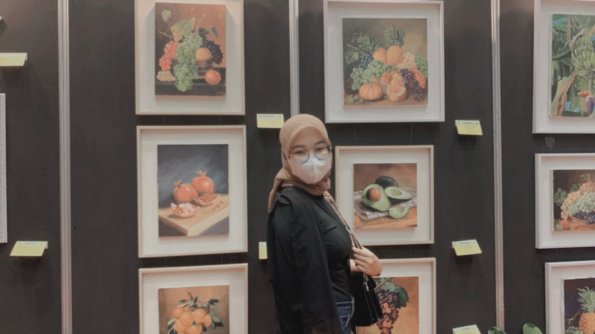

<html></html> <head>
    <title>Biodata Anggun Cahaya Purnamasari</title>
        <style type="text/css">
            .judul{ background-color: rgb(161, 218, 167);
            color:rgb(71, 67, 67); padding: 5px;border:2px solid rgb(38, 55, 38) ;}
        </style>
       <style>
      .nav ul {
          list-style-type: none;
          margin: 0;
          padding: 0;
          overflow: hidden;
          background-color: rgb(148, 192, 161);
        }
        
       .nav li {
          float: left;
        }
        
       .nav li a {
          display: block;
          color: rgb(11, 10, 10);
          text-align: center;
          padding: 14px 16px;
          text-decoration: none;
        }
        
      .nav  li a:hover {
          background-color: rgb(44, 83, 74);
        }
        </style> 
</head>

<body>
    <div class="nav">
        <ul>
            <li><a href="">biodata</a></li>
            <li><a href="portofolio.html">portofolio</a></li>
        </ul>

    </div>
   
    <body style="font-size:15 ;"text="#oooooo" bgcolor="#D3D3D3">
    <h1 style="text-align: center;" class="judul">BIODATA<h1>
    
<h2 style="color: rgb(21, 100, 21); margin-bottom: 7pt;">Tentang Saya</h2>
<p style="text-align: justify;">Hallo! Saya Anggun Cahaya Purnamasari salah satu mahasiswa dari Universitas Negeri Surabaya. 
    Saya memiliki ketertarikan dalam bidang pengembangan daerah melalui eksplorasi potensi Daerah untuk mendukung tercapainya kesejahteraan masyarakat.
    Selain itu saya juga tertarik dengan kegiatan analisi isu-isu kebijakan publik. 
    Motto dalam diri saya yaitu, berjuanglah seakan-akan nyawamu dipertaruhkan.</p>
<h2 style="color: rgb(21, 100, 21);"> Keahlian Saya</h2>
    <ul> 1. Microsoft office (Word, Excel & Power point)</ul>
    <ul> 2. Google Apps (Drive, docs, & spreadseets) </ul>
    <ul> 3. Design Grafis</ul>
    <ul> 4. Leadership</ul>
    <ul> 5. Accounting</ul>
<h2 style="color: rgb(21, 100, 21);"> Riwayat Pendidikan</h2>
    <ul> 2017 - 2020 SMKM 1 Gresik | Akuntansi & Keuangan Lembaga </ul>
    <ul> 2020 - Present Universitas Negeri Surabaya | S1 Ilmu Administrasi Negara</ul>
<h2 style="color:rgb(21, 100, 21); margin-bottom: 7pt;"> Pengalaman Magang</h2>
    <ul> Nov - April 2019 PT Swabina Gatra Travel | Kasi Pelayanan</ul>
<h2 style="color: rgb(21, 100, 21) ; margin-bottom: 7pt;">Kontak Saya</h2>
    <a href="https:www.instagram.com/angguncaa_/">Instagram</a>
    <br>
    <a href="https://wa.me/<+628816088176">WhatsAPP</a>
    <br>
    <a href="file:///C:/Users/THINKPAD/PRAKTIK/Portofolio.html">Portofolio</a>


